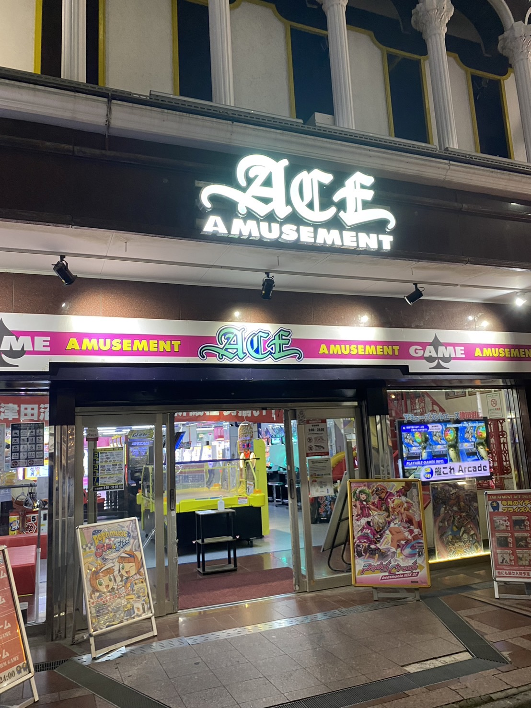
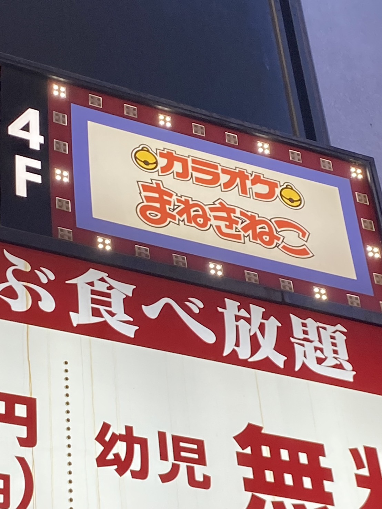
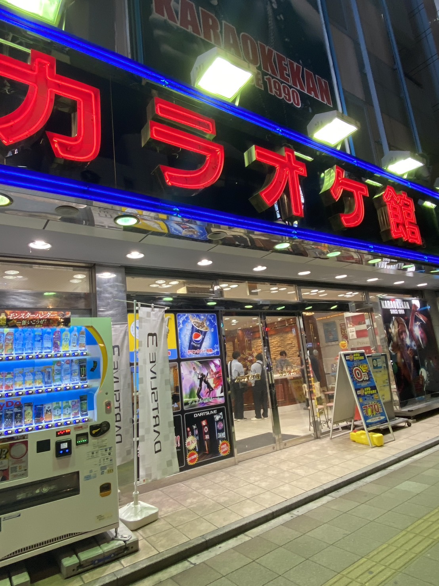
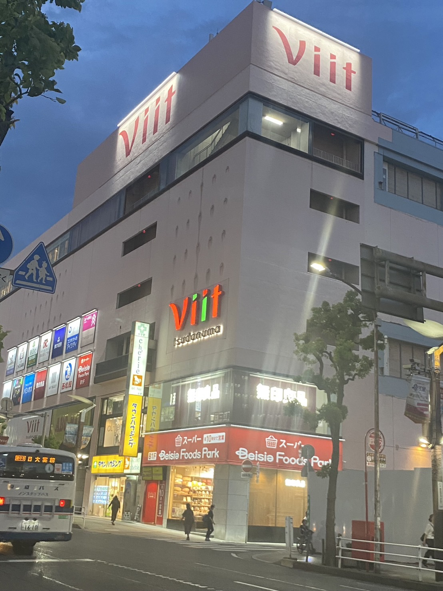
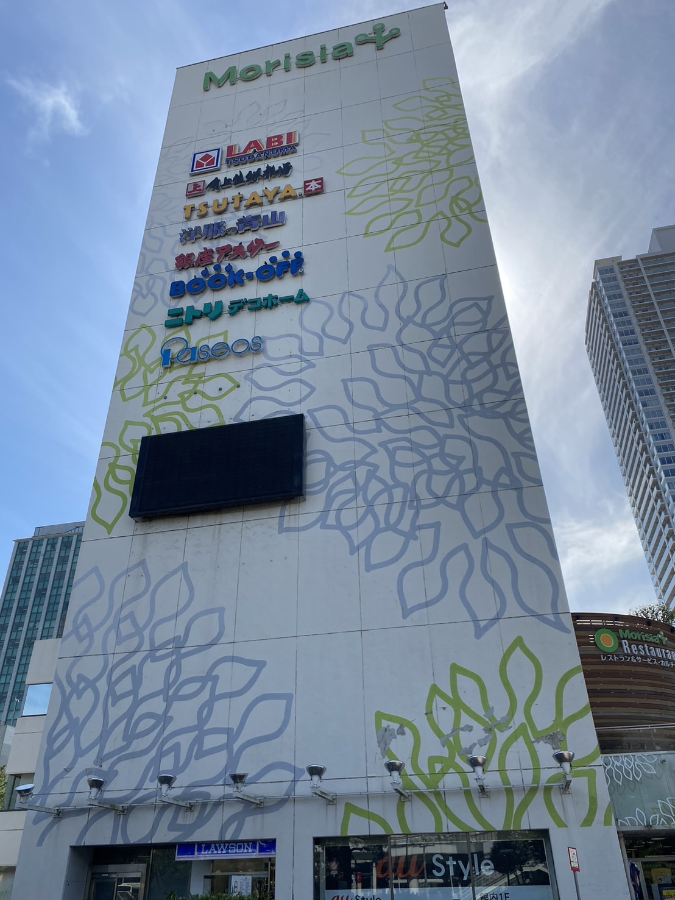

駅近の娯楽施設
- 1位 アミューズメントエース津田沼
- 2位 カラオケまねきねこ津田沼北口店
- 3位 カラオケ館
- 4位 津田沼ビート
- 5位 モリシア津田沼
1位 アミューズメントエース津田沼
| 店舗情報 | |
|---|---|
| 駅からの距離 | 約100m |
| 営業時間 | 9時00分~24時00分 |
| 住所 | 千葉県船橋市前原西2丁目15番地1号ファミリービル1F~3F |
| リンク | https://leisurelan.co.jp/store/ace-tu/ |

2位 カラオケまねきねこ津田沼北口店
| 店舗情報 | |
|---|---|
| 駅からの距離 | 約140m |
| 営業時間 | 24時間 |
| 住所 | 千葉県習志野市津田沼1丁目11-4 JPT津田沼ビル4F |
| リンク | https://www.karaokemanekineko.jp/locations/?id=589 |

3位 カラオケ館津田沼店
| 店舗情報 | |
|---|---|
| 駅からの距離 | 約150m |
| 営業時間 | 9時00分~5時00分 |
| 住所 | 千葉県習志野市津田沼1-11-2 |
| リンク | https://karaokekan.jp/shop/detail/132 |

4位 津田沼ビート
| 店舗情報 | |
|---|---|
| 駅からの距離 | 約190m |
| 営業時間 | 10時00分~20時00分 |
| 住所 | 千葉県船橋市前原西2丁目19-1 |
| リンク | https://tsudanuma-viit.jp/ |

5位 モリシア津田沼
| 店舗情報 | |
|---|---|
| 駅からの距離 | 約250m |
| 営業時間 | ショップ10時00分~21時00分 レストラン11時00分~22時00分 |
| 住所 | 千葉県習志野市谷津1丁目16-1 |
| リンク | https://morisia.com/ |
